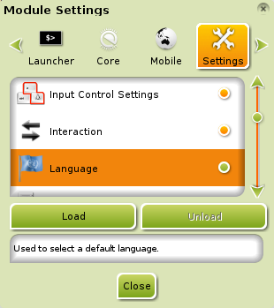
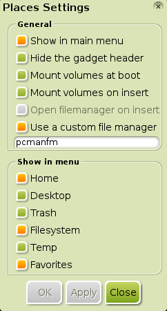
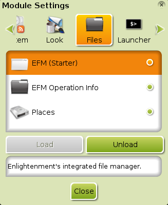

[kliknite na bilo koju sliku za uvećanje]
Pošto mnogi novi korisnici Bodhi-ja imaju ista pitanja, evo odgovora na neke od njih:
Zašto je tako malo programa instalirano(po defaultu)?
Deo filozofije Bodhi Linux distribucije je minimalizam i izbor korisnika. Mislimo da su naši korisnici dovoljno pametni da sami izaberu koje programe žele i mi im to omogućavamo na lak način preko Bodhi Linux
AppCenter-a. Takođe smatramo da je lakše i bolje za vas da napravite sistem koji vi želite od početka, nego da morate da uklanjate gomilu programa koje ne želite/ne trebate i onda
instalirate one koji vam trebaju/koje želite.
Kako promeniti jezik sistema?
{kind=link}
Ovo je jednostavno, pod uslovom da ste već instalirali jezički paket kao što je opisano
ovde.
Prvo, proverite da li je Language module učitan.
Da biste to uradili, idite na Main Menu>Settings>Modules i u Module Settings dialogu,
idite na Settings tab (traka), klizite na dole dok ne dođete do Language i izaberite(selektujte) ga. Ukoliko je Unload
dugme neaktivno, onda taj modul nije učitan. Ako je to slučaj, kliknite na Load dugme da ga učitate.
Sada, idite na Main Menu>Settings>All>Language>Language Settings. Tu selektujte jezički paket koji ste instalirali i kliknite OK.


Neki ljudi će morati da odu na Main Menu>Settings> All>Language> Input Method,
čekiraju "Use No Input Method", izaberu (selektuju) ibus, kliknu
"Setup Selected", i na kraju, Apply da bi promena jezika radila.
Osvežavanje(refresh) vaše radne površine sa Main Menu> Enlightenment>Restart može takođe biti neophodno.
To bi bilo to!
Napomena:Fotografije iz Language Settings dialoga, prikazuju Francuski nakon instalacije bodhi-language-fr
paketa u ovom primeru na Instaliranje Programa stranici.
Kako promeniti izgled(layout) tastature?
Prvo, proverite da li je Keyboard module učitan.
Da biste to uradili, idite na Main Menu>Settings>Modules i u Utilities traci(tabu) u
Module Settings dialogu, klizite dole dok ne dođete do Keyboard. Kliknite na to, i ako je Unload
dugme neaktivno, onda modul nije učitan. Ako je to slučaj, kliknite Load dugme da ga učitate.
Sada, idite na Main Menu>Settings>All>Input>Keyboard.
Kliknite Add dugme u Keyboard Settings dialogu.
Ovde, izaberite (selektujte) izgled(layout) tastature koji želite i kliknite OK da bi dodali izgled vašoj dostupnoj konfiguraciji.
Sada kada je to dodato, samo kliknite na to, pomerite do vrha sa Up dugmetom i kliknite OK da bi ga primenili!
Napomena: Kada ste jednom učitali Keyboard Module, sada možete dodati Keyboard
Gadget na policu ili vašu radnu površinu. Ovo omogućava izuzetno pogodno okruženje za one koji često menjaju izgled(layout)!
Gde su ikonice na radnoj površini?
Od verzije 2.1.0, ikonice na radnoj površini su učitane po standardu(default), zahvaljujući odluci da Enlightenment File Manager (EFM) bude standardni(default) fajl menadžer.
EFM podržava ikonice na radnoj površini u Enlightenment (e17).
Možete dodati fajlove i pokretače(launchers) na radnu površinu prebacivanjem pomenutih fajlova/pokretača u Desktop folder koji se nalazi u vašem Home direktorijumu. Jednostavno!
U suprotnom, možete da onemogućite prikazivanje ikonica na radnu površinu preko
Main Menu>Settings>All>Files>File Manager, pod Display trakom(tab).
Kako zameniti EFM sa drugim fajl menadžerom?

{kind=link}
Ne morate ukloniti(remove) ili zameniti(replace) EFM da bi koristili drugi fajl menadžer (FM) ili kako bi postavili drugi FM kao standardni(default) FM:
-
Da bi koristili drugi FM, samo instalirajte FM po vašoj želji i koristite ga iz odnosnog ulaznog Aplikacijskog menija ili pokretača(launcher)
(ili fajla sa radne površine) kada želite da ga pokrenete.
- Da podesite drugi FM kao standardni(default) FM, samo idite na Main Menu>Settings>All>Apps>Default Applications. Tu, izaberite "File" iz leve sekcije, "Default Applications" i klizite kroz desnu sekciju, "Selected Application" da bi našli odgovarajući Fajl Menadžer. (Ovo podrazumeva da ste prethodno instalirali taj FM.) Kada ga izaberete(selektujete), kliknite na Apply. Potom na OK.
Da uklonite EFM i njegov Navigate... ulazni meni, videti pitanje ispod. Što se tiče uklanjanja EFM, pretpostavićemo da se to odnosi na dodeljivanje
Navigate... ulaznog menija drugom FM. Ovo nije moguće, ali
Enlightenment (e17) nudi alternativni model koji može dodeliti bilo koji spoljni FM! To se zove
Places i instaliran je po standardu(default). Da učitate ovaj modul, idite na Main Menu> Settings> Modules.
Na gornjim tabovima(trakama), klizite udesno dok ne dođete do Files taba. Tu, izaberite Places i kliknite dugme "load". Sada, da dodelite vaš izabrani FM, idite na
Main Menu>Settings>All>Files>Places i čekirajte
Use a custom file manager. Otkucajte komandu koja pokreće vaš FM u tekstualnom polju. Kliknite Apply.
Zatim OK. Gotovo.
Kako ukloniti/uninstalirati EFM?

{kind=link}
EFM-ova verzija uklanjanja se sastoji u isključivanju njegovog odnosnog modula, EFM (Starter). On se ne može ukloniti skroz/uninstalirati jer je sastavni deo samog Enlightenment (E17). Da isključite modul, idite na Main Menu>Settings>Modules. Na tabovima na vrhu, klizite udesno dok ne dođete do Files taba. Tu, izaberite(selektujte) EFM (Starter) i kliknite dugme "Unload". On je sada onesposobljen i ne može se koristiti; imajte na umu da ovo takođe uklanja i Navigate... ulaz u Main Menu i sve ostalo što zavisi od EFM, kao što su i ikonice na radnoj površini.
Zašto Bodhi Linux koristi Midori Web Browser?
{kind=link}
Kada smo sproveli anketu među našim korisnicima koji web browser bi trebali da uključimo po standardu(default), došli smo do skoro izjednačenog rezultata u 3 kategorije, između trenutne verzije Firefox-a, starije verzije Firefox-a i Chromium-a. Tako da, umesto da izaberemo jedan od njih koji bi ostavio skoro 2/3 naših korisnika nezadovoljnim i potrebe za instaliranjem još jednog browsera u svakom slučaju, otišli smo u sasvim suprotnom pravcu: Midori!
Prednosti Midori-ja se ogledaju u velikoj funkcionalnosti i velikoj lakoći(na resursima), što se uklapa u koncept Bodhi Linux filozofije (videti prvo pitanje). Midori takođe ima opciju koju drugi nemaju, a to je da iz njega mogu da se instaliraju programi iz Bodhi Linux AppCenter-a.
Kako isključiti "poskakivanje"(bouncy) prozora?

Ljudi koji koriste Composite Module izgleda da često postavljaju ovo pitanje.
Da isključite ovaj efekat, idite na Main Menu>Settings>All>Look>Compositing.
Kliknite na Advanced. U donjem delu prozora, izaberite BILO KOJI
osim "default", kliknite Apply, i više nećete imati "poskakivanje" prozora.
Zašto mora da se klikne na naslovnu traku(title bar) da bi se prozor postavio napred?

Ovo je poznato kao "Fokus Pokazivača"(Pointer Focus) i to je standardni metod fokusiranja prozora na UNIX radnim površinama već dugo vremena. To je takođe standardni odabir Enlightenment developera, i kao takav Bodhi Linux je izabrao da poštuje njihovu odluku o standardnom(default) ponašanju.
Takođe treba naglasiti da će prozor koji se nalazi u Fokusu reagovati na pritiskanje tastera, što ne znači da je u pitanju prozor koji se nalazi na vrhu.
Znamo i da su mnogi korisnici nenaviknuti na ovakvo ponašanje, ali se to vrlo lako može podesiti prema vašim potrebama. Samo idite na Main Menu>Settings>All >Windows>Window Focus. Tu, izaberite opciju koja vam odgovara, kliknite Apply, zatim Close.
Pointer Focus može biti mnogo produktivniji metod, zato nemojte biti strogi prema njemu: isprobajte!
Više informacija...
Postoji "pravi" FAQ na Bodhi Linux Doc Wiki stranici. To je uvek "rad u toku" i svako može da ga izmeni. Kao što je rečeno, ako imate neko pitanje ili odgovor za koji smatrate da bi trebalo dodati u FAQ, budite slobodni da to dodate!